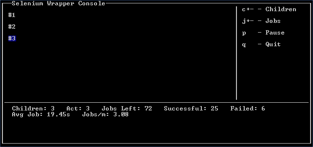
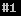
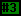

The wrapper can be launched by using run.bat in Windows or python run_test.py on any system with Python setup and configured in its path. Everything is automatically prepared, an optional initial settings wizard is shown on startup.
The initial settings wizard allows configuration and validation of settings before running. Each option has a respective options directive seen in Options Directives including the option to disable the initial settings wizard entirely. To select an option enter the letter to the left of the label and then hit enter. Any entered text or numbers will be converted to the required type (for example, for the port an integer) upon hitting enter. To restore an option to its default, remove all text from the field and hit enter. When complete, hit enter with no selection and your settings will be validated. If there are no issues with your settings, the script will begin.
a) # Children: 1
b) Stagger Spawn: False
c) # Jobs: 1
# Children determines the number of concurrent PhantomJS processes the script will run. Although the default number is 1, users with a more powerful processor will find themselves capable of running over 20, though this varies wildly with the script ran. Scripts with a great deal of waiting on page elements can run with more concurrent instances than those which are actively clicking or navigating.
Stagger Spawn , which is short for staggered child spawning, is intended to distribute load throughout a site more evenly. Without staggering and with a high number of children, the load will be very pinpointed at an exact point of the site consistently, at least at the beginning. This options spawns children 5 seconds apart by default but can be configured using staggertime.
# Jobs determines the number of times the recorded script will run. Every child process will pull from a job queue (of this length) when it starts and will do so until the queue is empty
Pool Settings
d) Log Lvl (0-5): -1
e) Get Images: False
Log Level (0-5) See Logging
Get Images Determines whether PhantomJS will bother to download images. If during recording an image was clicked on, it must have an alt tag for this option to be false.
Reporting Settings
f) Server: None
g) Port: 8089
h) User: None
i) Password: None
j) Index: None
k) Project Name: None
l) Run Name: None
m) Script Name: None
n) Client Name: auto
Server, Port, User, Password, Index These options are all Splunk installation specific. Splunk must allow remote connections from the client’s host on a port, default is 8089 via the REST API. Details about the Splunklib module and how it is used can be found in sw.report and official documentation on Splunk’s website.
Project Name is a layer of abstraction on individual recorded runs with various scripts. It is considered to be the highest level of abstraction to group together these runs, spanning over days or months. A project would ideally contain a multitude of runs. There are checks done to make sure Project Name is used and valid.
Run Name is a layer of abstraction on individual scripts ran within a period of time, usually expected to be less than a day. Runs may contain one or more scripts to do various load testing. Run names are checked for valid characters as well.
Script Name is the final layer of abstraction on an individual execution of a script. A script may be unique or may not within a run.
Client Name is usually left on auto. When autogenerated it takes the format user@computername.
The Selenium Wrapper Console is composed of 3 separate sections: children (top left), controls (right), and statistics (bottom).
Each child is assigned a unique index (#1, #2, #3 here). This index is printed and changes color depending on the status of the child process.
| Example | Font | Background | Meaning |
|---|---|---|---|
|  | White | Black | Running |
| White | Blue | Waiting | |
|  | Black | Green | Job Finished |
| Black | Yellow | Loading Subprocess | |
| Black | Red | Fatal Error (screen flashes) | |
| Black | White | Child Offline |
The statistics section shows the number of children, active number of children (Act), remaining jobs, successful jobs, failed jobs, average job time, and jobs per minute or per second depending on time taken.
Jobs per minute is split into two types. True jobs per minute and Ideal jobs per minute. True jobs per minute is calculated by dividing the time elapsed by the number of jobs completed. This number is accurate as it takes into account failed jobs. However, until a large number of nobs have been completed it jumps around a great deal. It does not display until 5 jobs have completed.
Ideal jobs per minute is a bit more complicated. It is 60 divided by the average job time multiplied by the number of children. This result is greatly skewed by simply adding/disabling children. It is named ideal because it should be reached with few failures.
The controls section shows the 4 primary keys used to control pool operation. Keys are broken into three categories: designators, modifiers, and executors. c and j are designators. Designators give a command to be modified by a modifier. Any number entered is a valid modifier as long as the window has space for it. Executors are q, s, p, -, and +. Executors will take any valid modifiers and then perform an action. q, s, and p accept no modifiers or designators, if any are provided they are discarded.
As you type, commands are visible in the bottom right corner of the controls section.
It is easiest to show valid usage for c/j with examples:
Logging is automatically performed and there is currently not an option to turn it off. All logs are within a timestamped folder in logs/. Each child then create its own log in in that subfolder with the format logs/<timestamp>/log-#.log, where the number is the child’s number printed to the console. This log will contain detailed information about errors, time taken, and the status of the script.
Logging levels can be configured with the level directive or within the initial settings wizard. Possible levels are as follows:
There are several levels as seen in conversion_files/includes/libs/sw/const.py:
####################################################################################################
# Error Log Levels
# Error log levels are used to mark a message as a certain category, then output it if that level
# of detail is requested.
INFO = -1
DEBUG = -1
NOTICE = 0
WARNING = 1
ERR = 2
CRITICAL = 3
NONE = 5
####################################################################################################
With the lowest log level, INFO, this is an example of a log that is prepared:
[15:37:14] (NOTICE) Child process started and loaded
[15:37:20] (NOTICE) Beginning wait for element "accounts" of type "link_text".
[15:37:35] (NOTICE) Beginning wait for element "OrderPage_Row_6" of type "name".
[15:37:42] (NOTICE) Beginning wait for element "clear_overlay" of type "id".
[15:37:46] (NOTICE) In waitToDisappear "clear_overlay" was never there to begin with.
[15:37:46] (INFO) Waiting for "clear_overlay"
[15:37:49] (INFO) Element "clear_overlay" disappeared!
[15:37:50] (NOTICE) Beginning wait for element "clear_overlay" of type "id".
[15:37:54] (NOTICE) In waitToDisappear "clear_overlay" was never there to begin with.
[15:37:57] (NOTICE) Beginning wait for element "AmountPage_Row_27" of type "name".
[15:38:02] (INFO) Waiting for "clear_overlay"
[15:38:04] (INFO) Element "clear_overlay" disappeared!
[15:38:05] (NOTICE) Beginning wait for element "clear_overlay" of type "id".
[15:38:08] (NOTICE) In waitToDisappear "clear_overlay" was never there to begin with.
[15:38:08] (INFO) Waiting for "clear_overlay"
[15:38:10] (INFO) Element "clear_overlay" disappeared!
[15:38:10] (INFO) Waiting for "clear_overlay"
[15:38:13] (INFO) Element "clear_overlay" disappeared!
[15:38:13] (NOTICE) Beginning wait for element "clear_overlay" of type "id".
[15:38:16] (NOTICE) In waitToDisappear "clear_overlay" was never there to begin with.
[15:38:17] (INFO) Waiting for "clear_overlay"
[15:38:19] (INFO) Element "clear_overlay" disappeared!
[15:38:19] (INFO) Waiting for "clear_overlay"
[15:38:21] (INFO) Element "clear_overlay" disappeared!
[15:38:22] (NOTICE) Beginning wait for element "clear_overlay" of type "id".
[15:38:25] (NOTICE) In waitToDisappear "clear_overlay" was never there to begin with.
[15:38:25] (INFO) Waiting for "clear_overlay"
[15:38:27] (INFO) Element "clear_overlay" disappeared!
===================== <More Waiting>
[15:39:18] (INFO) Waiting for "clear_overlay"
[15:39:25] (INFO) Element "clear_overlay" disappeared!
[15:39:36] (NOTICE) Successfully finished job (141.878000021s)
[15:39:36] (NOTICE) Stopping child process: "DONE"
On the lowest log level, the wrapper gives a great deal of information about where it is waiting for debugging purposes. Waits are only documented if they are engaged; if an element can already be selected, no time is wasted waiting and the script directly interacts with it. The timestamp on the far left is the exact time in which the message was printed, the next field is the log level that this was printed at— if child.level were greater than this, it wouldn’t print. The final field is the message itself.
Also placed within the log directory are any screenshots that were taken either as a directive within the script or for an error. Any time a screenshot is created, it is noted in the respective child’s log file where it was stored and at what time. For example, here is a log where an error was encountered:
[14:15:48] (NOTICE) Child process started and loaded
[14:15:52] (NOTICE) Beginning wait for element "Accounts" of type "link_text".
[14:15:57] (NOTICE) Choosing grower #16
[15:37:57] (NOTICE) Beginning wait for element "AmountPage_Row_27" of type "name".
[14:16:07] (ERROR) 'sleepwait() takes exactly 3 arguments (4 given)'
[14:16:08] (ERROR) Wrote screenshot to: /home/test/script_converter/out/test_script/logs/2014-08-26_14-15-45/error_0.png
[14:16:08] (ERROR) Stack trace: Traceback (most recent call last):
File "/home/test/script_converter/out/test_script/includes/libs/sw/child.py", line 144, in think
func( self.driver )
File "/home/test/script_converter/out/test_script/run_test.py", line 30, in test_func
waitToDisappear( driver, 'AmountPage_Row_27' )
File "/home/test/script_converter/out/test_script/includes/libs/sw/utils.py", line 212, in waitToDisappear
sleepwait( driver, element, type, kwargs )
TypeError: sleepwait() takes exactly 3 arguments (4 given)
[14:16:08] (NOTICE) Stopping child process: "RESTARTING"
The highlighted line shows where the screenshot was written to, error_#.png. Every new error increments this number.
{kind=link}
{kind=link}